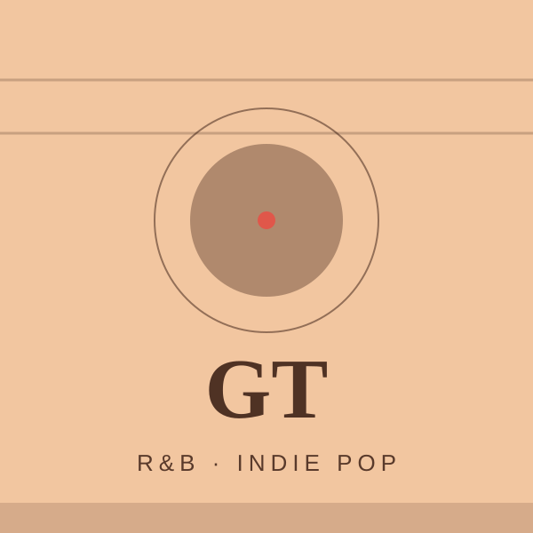

R&B · indie pop
Gareth.T
The most-played voice in this collection: soft, close to the microphone, with a guitar that never gets in the way of the words.
- Waves
- 2 More Weeks
- Sing Love Songs with My Back
- Emergency Contact
- Forget You in the Arctic
Start with Waves — five tracks, five moods.